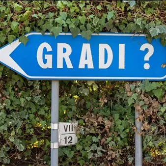

lun 5 ott
Al Borarium prosegue "Il cambiamento in persona": Amayah Pelegrin e la cultura che immagina futuri alternativi
Al Borarium, lo spazio del Museo della Bora a Opicina che ha appena festeggiato il suo primo anno di attività, la risposta passa dalle storie. Prosegue infatti il ciclo "Il cambiamento in persona", legato al progetto "Segnali di cambiamento/Znanilci sprememb": dopo…
 Indicazioni
Indicazioni
- Costi e prenotazioni
- Costo non indicato · Prenotazione non indicata
- Programma
- Programma da verificare. Apri la fonte ufficiale per orari e possibili aggiornamenti.
- In caso di maltempo
- Nessuna indicazione specifica pubblicata.
- Note
- Acquisito automaticamente dalla fonte.
L’EVENTO
Descrizione completa
Al Borarium, lo spazio del Museo della Bora a Opicina che ha appena festeggiato il suo primo anno di attività, la risposta passa dalle storie. Prosegue infatti il ciclo "Il cambiamento in persona", legato al progetto "Segnali di cambiamento/Znanilci sprememb": dopo l'appuntamento del 28 settembre con Irene Ivoi sulle vacanze del futuro, lunedì 5 ottobre alle 18 tocca ad Amayah Pelegrin, con il laboratorio "Creare futuri alternativi", dedicato alla leadership culturale per la transizione ecologica e alle organizzazioni artistico-culturali socialmente impegnate.
Pelegrin torna al Borarium dopo aver condotto con successo, in Friuli Venezia Giulia,
"Cultural Power", il primo percorso formativo sul ruolo delle organizzazioni culturali nella transizione ecologica. Questa volta il tema è più ambizioso: come la cultura plasma le società, i valori delle comunità, e persino i confini di ciò che immaginiamo raggiungibile. Le narrazioni, spiega Pelegrin, non si limitano a descrivere il mondo: lo costruiscono, un immaginario collettivo alla volta. Per dimostrarlo porterà al Borarium i risultati della sua ultima ricerca sulle organizzazioni di arte socialmente impegnata a livello europeo, per capire quale ruolo stiano già giocando nella trasformazione sociale in corso e quale peso abbiano sul welfare culturale. Al laboratorio seguirà un esercizio pratico: un'occasione per chi partecipa di mettere a fuoco il proprio ruolo, presente o potenziale, in questo cambiamento, e di costruire insieme reti e nuove idee da portare a casa.
L’evento si svolgerà in lingua italiana con traduzione simultanea in sloveno.
Il laboratorio partecipato è aperto a 35 persone. Iscrizioni a museobora@gmail.com .
IL PROGRAMMA
Programma e orari
Appuntamenti raccolti dalle fonti elencate. Dove manca un orario, non è ancora disponibile in questa scheda.
Programma pubblicato
- Dal 2026-10-05 al 2026-10-05
INFORMAZIONI UTILI
Prima di partire
- Controllare la fonte prima di partire.
ORGANIZZAZIONE